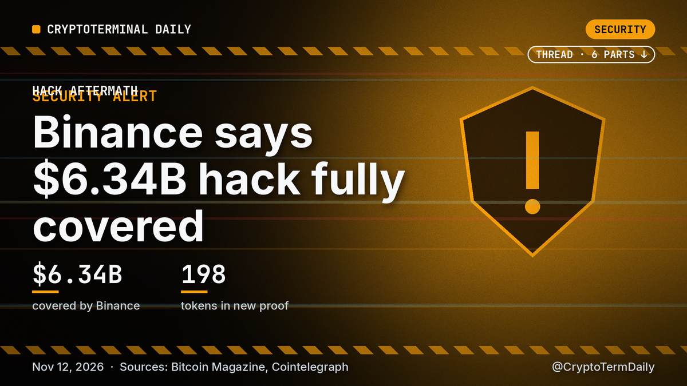
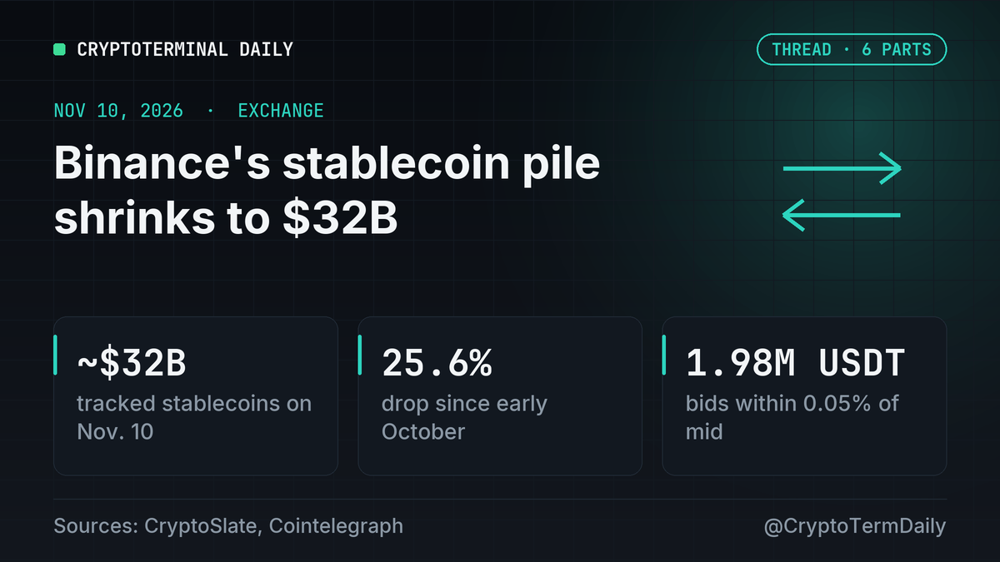

Crypto, explained daily
Trump's SEC and CFTC Slate Puts Two Democrats Back in Crypto's Rulemaking Seats
November 13, 2026 · Four names, two agencies, one narrow window…

Binance says it has made users whole after the largest hack in crypto
November 12, 2026 · Binance has told customers that the repayment is finished. Two weeks after the Oct. 29 breach that cost it $6.34B, the exchange announced on Thursday that it has completed coverage…

Bitcoin's Record Streak Nobody Wants
November 11, 2026 · Bitcoin is edging toward a first in its 18-year life: two calendar years in a row that end in the red. Decrypt flagged the pattern this week, and the numbers show how narrow the ga…

Bitcoin's Dry-Powder Question: What Binance's Shrinking Stablecoin Pile Does and Does Not Tell Us
November 10, 2026 · Every market bounce needs buyers, and in crypto a large share of that buying power sits in stablecoins parked on exchanges. That is why a fresh reading on Binance deserves attentio…